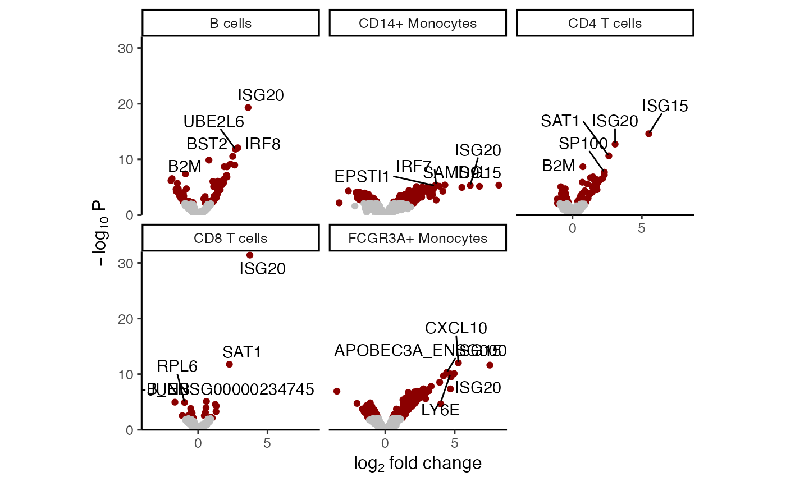
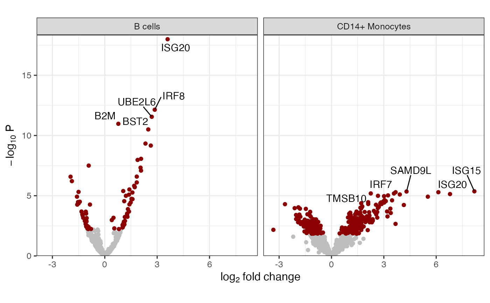

Volcano plot for each cell type
Usage
plotVolcano(
x,
coef,
nGenes = 5,
size = 12,
minp = 9.99999999999997e-311,
cutoff = 0.05,
ncol = 3
)
# S4 method for list
plotVolcano(
x,
coef,
nGenes = 5,
size = 12,
minp = 9.99999999999997e-311,
cutoff = 0.05,
ncol = 3
)
# S4 method for MArrayLM
plotVolcano(
x,
coef,
nGenes = 5,
size = 12,
minp = 9.99999999999997e-311,
cutoff = 0.05,
ncol = 3
)
# S4 method for dreamlet_mash_result
plotVolcano(
x,
coef,
nGenes = 5,
size = 12,
minp = 1e-16,
cutoff = 0.05,
ncol = 3
)Arguments
- x
result from
dreamlet- coef
coefficient to test with
topTable- nGenes
number of genes to highlight in each volcano plot
- size
text size
- minp
minimum p-value to show on the y-axis
- cutoff
adj.P.Val cutoff to distinguish significant from non-significant genes
- ncol
number of columns in the plot
Examples
library(muscat)
library(SingleCellExperiment)
data(example_sce)
# create pseudobulk for each sample and cell cluster
pb <- aggregateToPseudoBulk(example_sce,
assay = "counts",
cluster_id = 'cluster_id',
sample_id = 'sample_id',
verbose=FALSE)
# voom-style normalization
res.proc = processAssays( pb, ~ group_id)
#> B cells...
#> 0.033 secs
#> CD14+ Monocytes...
#> 0.03 secs
#> CD4 T cells...
#> 0.037 secs
#> CD8 T cells...
#> 0.026 secs
#> FCGR3A+ Monocytes...
#> 0.034 secs
# Differential expression analysis within each assay,
# evaluated on the voom normalized data
res.dl = dreamlet( res.proc, ~ group_id)
#> B cells...
#> 0.068 secs
#> CD14+ Monocytes...
#> 0.12 secs
#> CD4 T cells...
#> 0.053 secs
#> CD8 T cells...
#> 0.026 secs
#> FCGR3A+ Monocytes...
#> 0.063 secs
#>
# show coefficients estimated for each cell type
coefNames(res.dl)
#> [1] "(Intercept)" "group_idstim"
# volcano plot for each cell type
plotVolcano(res.dl, coef="group_idstim")

# volcano plot for first two cell types
plotVolcano(res.dl[1:2], coef="group_idstim")
